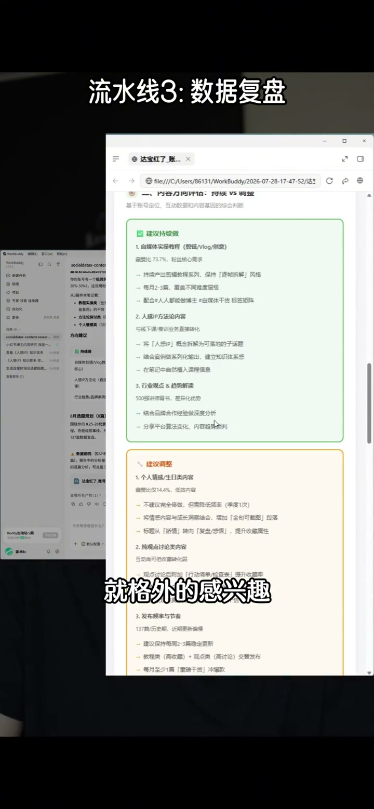

内容要点
[00:00] 你觉得上班和艺人公司最大的区别是什么
[00:03] 你看上班族是有明确的分工的
[00:05] 你只需要做好你那一摊事就行了
[00:07] 但艺人公司不一样
[00:08] 就所有的所事都会砸在你一个人头上
[00:11] 但是你注意了
[00:12] 这些所事它只会消耗我们的时间
[00:14] 不会给我们创造价值
[00:16] 所以如果你跟我一样是艺人公司
[00:18] 想要高的业绩
[00:19] 咱目标非常明确
[00:20] 就是把这些重复性的劳动
[00:22] 甩给别人 甩给工具
[00:23] 然后把自己有限的精力去放在那些重要的决策上面
[00:27] 今天还是不准去的
[00:28] 我直接拆给你
[00:29] 我这个艺人公司是怎么流水化运作的
[00:31] 接下来我想三个场景
[00:32] 都是我用同性的work body跑出来的
[00:34] 说到这个有一个非常非常巧的事
[00:35] 就那天我去搜后的大厦看到了一个海报
[00:38] 就是work body的海报
[00:38] 它上面有一个叫一键做浩款
[00:40] 我当时很好奇就扫了一下
[00:42] 一扫它就出来了一个饭办公模板
[00:44] 然后与此同时还有那个自媒体模板和电商模板
[00:47] 就是都可以直接用的那种
[00:48] 那我的第一条流水键
[00:49] 就是让它帮我盯着行业信息
[00:51] 你要知道艺人公司是没有人帮你搜集信息的
[00:54] 所有的决策都要依靠你自己的判断力
[00:56] 而判断力的基础一定是信息的质量
[00:59] 所以我就用AI给它设了一个定时的任务
[01:02] 然后每天早上它会自动的去扫描行业的动态
[01:05] 然后竞品的动向热门的话题
[01:07] 删选出跟我的业务相关的方向
[01:09] 然后直接推给我
[01:10] 然后先特别喜欢且常用的就是同性work body
[01:12] 这个pc端的灵感
[01:13] 里面全都是现成的模板
[01:15] 就像抓捧的圈一样
[01:16] 你刷一圈看到合适的点一下做同款
[01:19] 修改一下这个提示词就能用了
[01:21] 比如说我每周都要看热点出选题
[01:23] 那我可以直接找一个这个热点选题的模板
[01:25] 然后把我赛道的关键词给它填进去
[01:27] 它自动就能帮我生成一版选题库
[01:29] 然后我再挑一些顺眼的
[01:31] 细化一下修改一下就可以了
[01:32] 从里如果你是做市场工作的
[01:34] 可以监控竞品动态
[01:35] 做产品的可以追踪行业趋势
[01:37] 做销售的可以自动收集客户行业的讯息
[01:40] 把花时间找信息
[01:41] 变成花时间看信息
[01:43] 这样的场景就是把方案TPT
[01:45] 课程大纲变成流水线
[01:46] 业人公司有一个非常知名的问题
[01:47] 就是每一件事你都得自己做
[01:49] 而且这个事你还得从零开始做
[01:51] 所以经历效率就是很难扛得住
[01:54] 那我有一个解法
[01:55] 就是我建立了一个自己的工作框架库
[01:58] 什么意思呢
[01:59] 我会把我常用的一些结构
[02:00] 方案模板给它录进去
[02:02] 大家知道我非常擅长输出这种东西
[02:04] 然后每次需要写东西的时候
[02:06] 我只需要把这个要点给它丢进去
[02:08] 它就能给我产生一版出稿
[02:10] 比如我最近要做一个选题课的大纲
[02:12] 那这时候我就会把课程的核心内容
[02:14] 还有几个关键的模块
[02:15] 丢给同学你的work body
[02:16] 它就会直接帮我生成一版完整的带钢框架
[02:19] 比如包含钢结怎么分
[02:21] 每些讲什么逻辑怎么递进
[02:23] 它就都给你列好了
[02:24] 然后我只需要在它给我的框架之上
[02:27] 去添具体的案例调一调细节
[02:29] 加一些我自己的表达习惯就OK了
[02:31] 那原本可能花几天时间才能够打磨出来
[02:34] 现在就一天结束了
[02:35] 第三个场景就是我会把数据复盘交给它
[02:37] 做一人公司有一个动作非常重要
[02:39] 但大家经常会忽略就是复盘
[02:41] 比如你内容发了项目做了课上了
[02:43] 你一定要回头去看看
[02:45] 我做的这些动作里哪个是有效的
[02:47] 哪个方向我该继续
[02:48] 哪个该调整 哪个环节该删了等等
[02:51] 这个事现在非常简单了
[02:52] 就是我会把各个平台的数据员
[02:54] 给它接近腾讯的workbody
[02:55] 它会自动帮我生成一个复盘的报告
[02:57] 比如说这周哪一个内容表现最好
[02:59] 哪一个开头的留存最高
[03:01] 用户对什么话题就格外的感兴趣
[03:03] 以及下个月我该往哪个方向使劲
[03:06] 是全部都拼不了着
[03:07] 所以腾讯的workbody对我来说最大的价值
[03:09] 并不是它帮我真的写了多少字
[03:11] 而是它把我从重复性的劳动中给解放出来了
[03:14] 它能帮我把事情变得更加系统
[03:16] 这样的话我就可以把我的有限的精力放在
[03:18] 我最感兴趣的最需要动脑子的事情上
[03:20] 所以如果你也一个人在成立他人事
[03:22] 在做艺人公司可以去试试我的这套方法
[03:24] 那我的主要还有非常多做短视屏个人IP
[03:26] 以及提高工作效率的干货视频
[03:28] 如果你是新粉的话别忘了去主义服务客
[03:30] 别忘了关注


